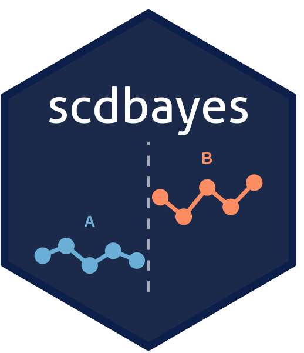

Bayesian multilevel modeling for single-case designs using brms and Stan. Fit piecewise regression models with random effects, compute posterior-based effect sizes, and assess consistency of effects across cases. Supports AB, reversal (ABAB), multiple baseline, multiple probe, alternating treatment, and changing criterion designs. Handles two- to four-level hierarchical structures for single-study and meta-analytic datasets.
Installation
The development version from GitHub with:
Alternatively, Launch and Browse the Shiny App
Access the web app at https://www.scdbayes.org.
Launch and browse the app on the local computer:
Getting Started
See the Single-Case Design, Meta-Analysis, and Power Analysis articles.
Citation
Shin, M. (2026). scdbayes: Bayesian single-case design analysis (R package version 0.1.1) [Computer software]. https://mshin77.github.io/scdbayes
Shin, M. (2026). scdbayes: Bayesian single-case design analysis [Web application]. https://www.scdbayes.org